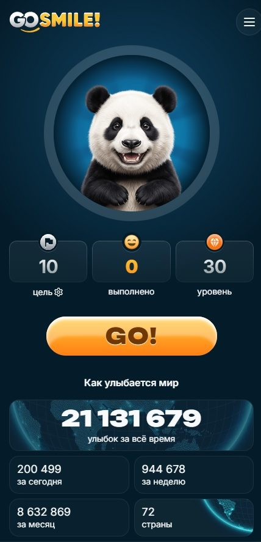

GO SMILE на Android: инструкция по установке
GO SMILE не нужно искать в магазине приложений: это веб-приложение, его добавляют на телефон прямо из браузера. Установка занимает около пяти минут и восемь шагов. Для iPhone есть отдельная инструкция.
Перед началом
Нужны телефон на Android, браузер и интернет. Названия пунктов ниже даны по Chrome: в других браузерах они могут называться иначе, но смысл тот же. Сначала зарегистрируйтесь по ссылке-приглашению:
Приложение находится по адресу gosmile.io. После установки оно получает свою иконку и открывается на весь экран, без адресной строки.
Установка в 8 шагов
- Откройте браузер и зайдите на сайт gosmile.io.
- Нажмите на три точки справа от адресной строки.
- В меню выберите «Установить и создать ярлык» (название может быть сокращено или звучать как «Установить приложение»).
- В окне «Установить приложение» (название GoSmile!, адрес gosmile.io) нажмите «Установить».
- Дождитесь сообщения телефона об установке приложения «GoSmile!».
- Найдите иконку «GO SMILE» среди приложений.
- Чтобы вывести иконку на главный экран, зажмите её, пока не появится меню, и выберите «Добавить на главную».
- Нажмите на иконку: приложение запустится на весь экран, без адресной строки.
Шаг 7 нужен только если хотите иконку на главном экране. В том же меню есть пункт «Удалить»: он пригодится, если захотите убрать приложение, а заново его можно установить по этим же шагам.
Как понять, что всё получилось
Значок «GoSmile!» виден среди приложений, а по нажатию открывается главный экран без адресной строки и кнопок браузера. Если открывается обычная вкладка браузера, повторите шаги 2–4: возможно, создана просто закладка.

Если что-то не получается
- Убедитесь, что открыта именно страница gosmile.io, а не поисковая выдача. Обновите страницу и откройте меню ещё раз.
- Если нужного пункта нет, откройте сайт в Chrome или обновите браузер. Ищите пункт со словами «установить» или «главный экран».
- Проверьте интернет и свободное место на телефоне. При слабой сети окно установки может закрыться: повторите шаги с начала.
- Иконку не удаётся перенести на главный экран: оставьте её в списке приложений, это не мешает пользоваться.
- Приложение долго грузится: закройте и откройте заново, смените сеть (Wi-Fi или мобильная), при необходимости перезагрузите телефон.
Разрешения и данные
Если приложение запросит доступ к камере или другие разрешения, прочитайте пояснение на экране и разрешайте только то, что считаете нужным. В приложении есть раздел «Не храним фото»: откройте его и прочитайте, прежде чем начинать.
С чего начать
Цель на день — от 10 до 500 улыбок; для упражнения «200 улыбок» ставят 200, а если это много, начните с меньшего. Все экраны с пояснениями: Как работает GO SMILE. Вопросы можно задать в Telegram.
Приложение не лечит и не заменяет консультацию врача или психолога; результат не гарантируется. Актуальные условия — на сайте GO SMILE.